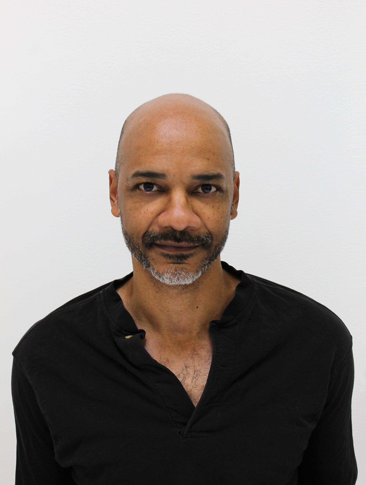

is an artist based in Los Angeles. McMillian is a Professor of Sculpture at the UCLA School of Arts and Architecture at the University of California, Los Angeles. McMillian holds a BA in Foreign Affairs from the University of Virginia. He studied art at the School of the Art Institute of Chicago and the Skowhegan School of Painting and Sculpture, and received a Master of Fine Arts degree from the California Institute of the Arts in 2002. McMillian’s work has been exhibited at the UCLA Hammer Museum and the Museum of Contemporary Art, Los Angeles, the Studio Museum in Harlem New York, the Herning Art Museum in Denmark, the Royal Academy in London, Boston's Institute of Contemporary Art and the Whitney. His work features in collections including the Harald Falckenberg Collection and the Saatchi Gallery. His 2012 solo exhibition Prospect Ave was shown at Maccarone in New York and featured found-object sculpture, site-specific installation, video, and paintings. McMillian was recently named one of the 30 American artists.
Rodney McMillian (1969—Present)